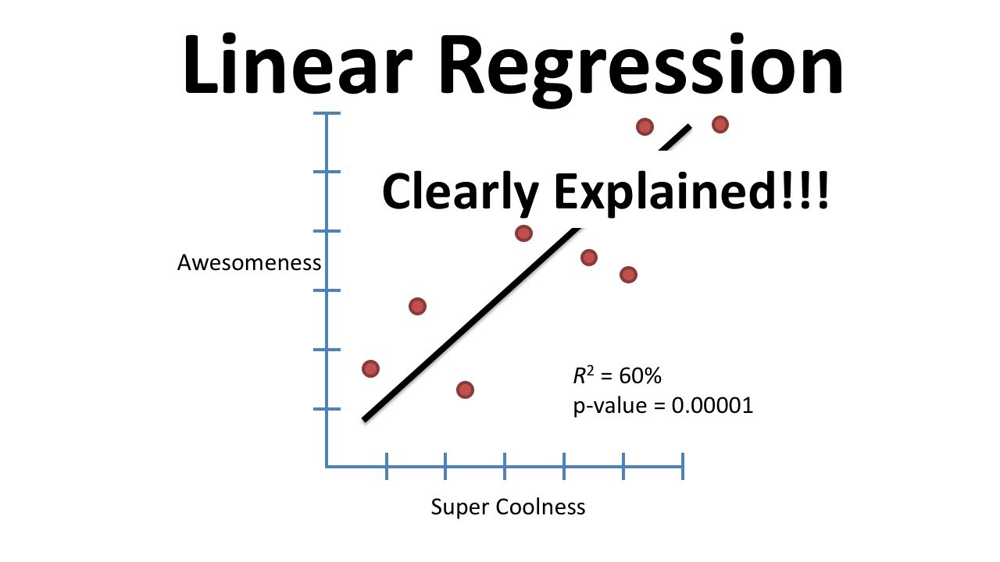

Multiple Linear Regression
Multiple Linear Regression (MLR) is an extension of simple linear regression. It is used when we want to predict the value of a variable based on the value of two or more other variables. The variable we want to predict is called the dependent variable (or sometimes, the outcome, target or criterion variable). The variables we are using to predict the value of the dependent variable are called the independent variables (or sometimes, the predictor, explanatory or regressor variables).[1]
Why MLR doesn't work for our data set
The reason MLR didn't work for this data set is that there is no linear relationship between:
- the dependent variable and each of the independent variables, and
- the dependent variable and the independent variables collectively.
Another reason is because the data does have some multicollinearity, which occurs when you have two or more independent variables that are highly correlated with each other. This leads to problems with understanding which independent variable contributes to the variance explained in the dependent variable, as well as technical issues in calculating a Multiple Regression Model.